单位里有多少台电脑、几台打印机、谁领走的、还剩多少净值——
一套台账管到底，不用再行政、财务、各部门各拿一份 Excel 轮流对表。
谁领走的说不清、放在哪找不到、年底盘点和财务对不上、折旧全靠手工算——这些事每家单位都有，只是没人愿意年年重来一遍。
资管易的做法很朴素：一套台账管到底。资产建档、领用归还、盘点、报废调拨、折旧、报表六件事，全部跑在同一个数据库上——台账一改，报表和资产卡立刻跟着变，不存在"表对不上"这回事。
保存资产自动生成编号和条码/二维码，50×30mm 标签纸直接打。扫码就知道是哪个资产、谁在用、在哪。
领用归还逐单登记，同一台资产不会出现两条未归还记录。归还要填资产状况，坏没坏当场记下来。
按部门或分类一键带出应盘清单，只录实盘数量，盘盈盘亏系统自动算。差异行必须写说明才能提交。
平均年限法按月计提累计折旧和净值。提够了自动标"已提足"，不会出现提超的情况，也不用财务再算一遍。
下面都是软件里的真实界面（数据为演示数据）。买回来建档贴码 → 交给谁领用 → 每年盘一次 → 报废或调拨 → 逐月折旧 → 出报表，就是一台资产完整的一生。
登录后默认进工作台。四张指标卡是资产总数、资产原值、本月新增金额、盘点差异项数；下面左边是按原值排序的前六个部门条形图，右边是在用 / 闲置 / 维修 / 报废待处置的环形构成；底部待办把"该管没管"的事列出来，点一下直接跳到对应单据。
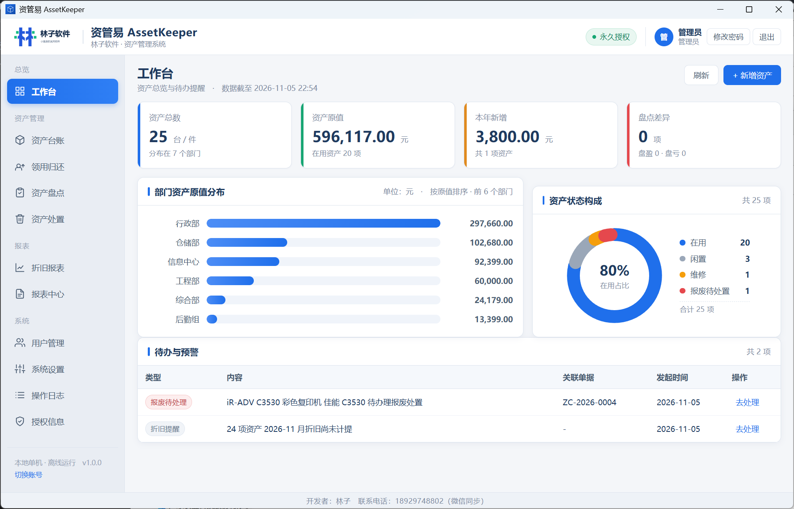
资产编号按 ZC-年份-序号自动生成，名称、分类、规格型号、品牌、使用部门、责任人、存放地点、采购日期、采购金额、资产状态、折旧年限（默认 5 年）、残值率（默认 5%）、备注、效果图，一次录全。列表底部固定一条合计栏，实时显示当前筛选结果的原值合计和条数。
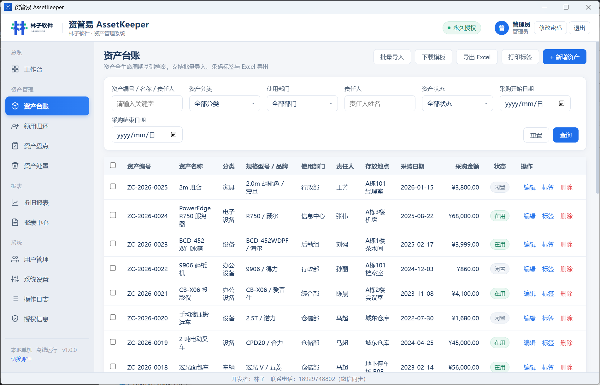
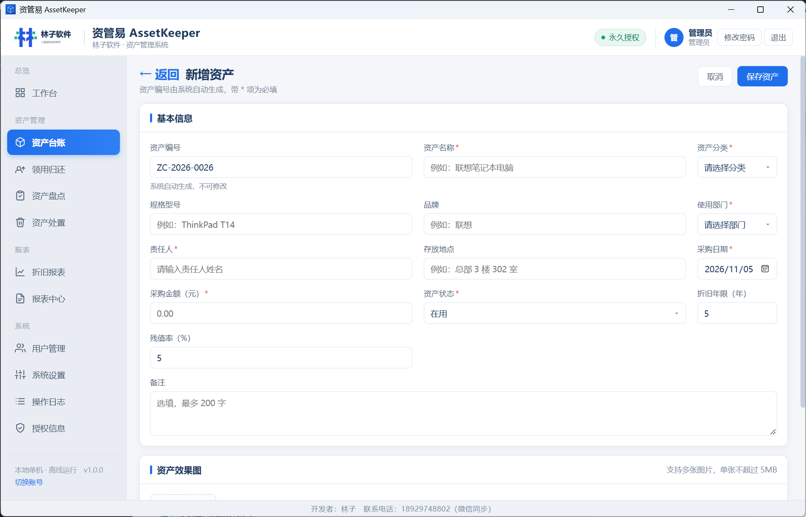
领用登记选资产、领用人、部门、领用日期、预计归还日期，生成 LY-年份-序号 的领用单。归还从"领用中"列表进去，填归还日期和资产状况（完好 / 轻微损坏 / 需维修）——选了损坏会问要不要转维修状态并记一笔维修备注。
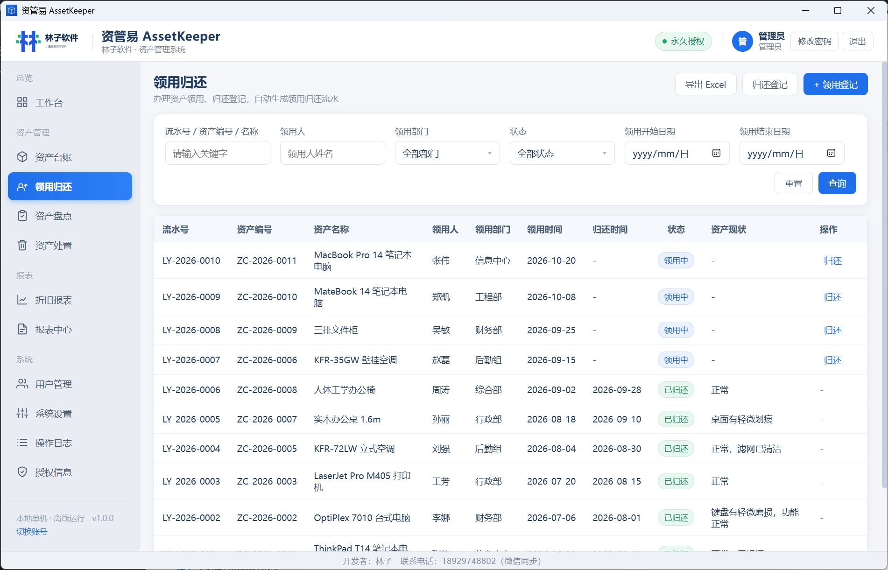
新建盘点单时只填名字、日期区间和范围（全部资产 / 按部门 / 按分类），系统自动带出应盘清单和应盘数量。接下来只需要逐条录实盘数量，盘盈盘亏系统实时算出来；差异行不填说明就提交不了。盘完导出报告，打印出来签字归档。
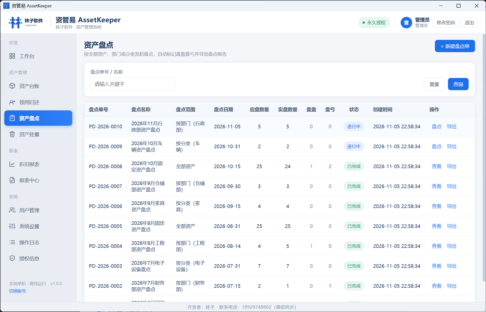
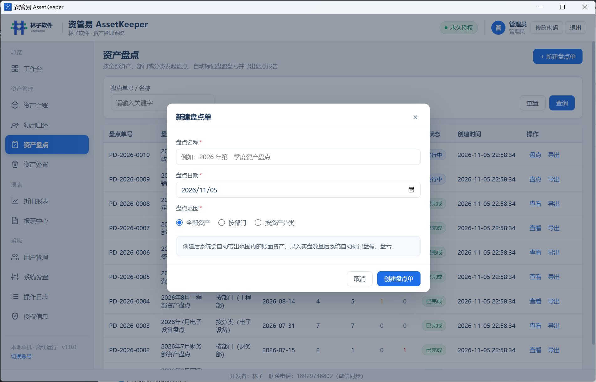
处置分两类。报废要填报废原因、报废日期、审批人，处置后资产状态变成"报废待处置"，退出在用统计但历史记录全留。调拨要填原部门、目标部门、新责任人、新地点，保存后资产卡上的部门、责任人、存放地点直接更新，资产本身不退出单位。
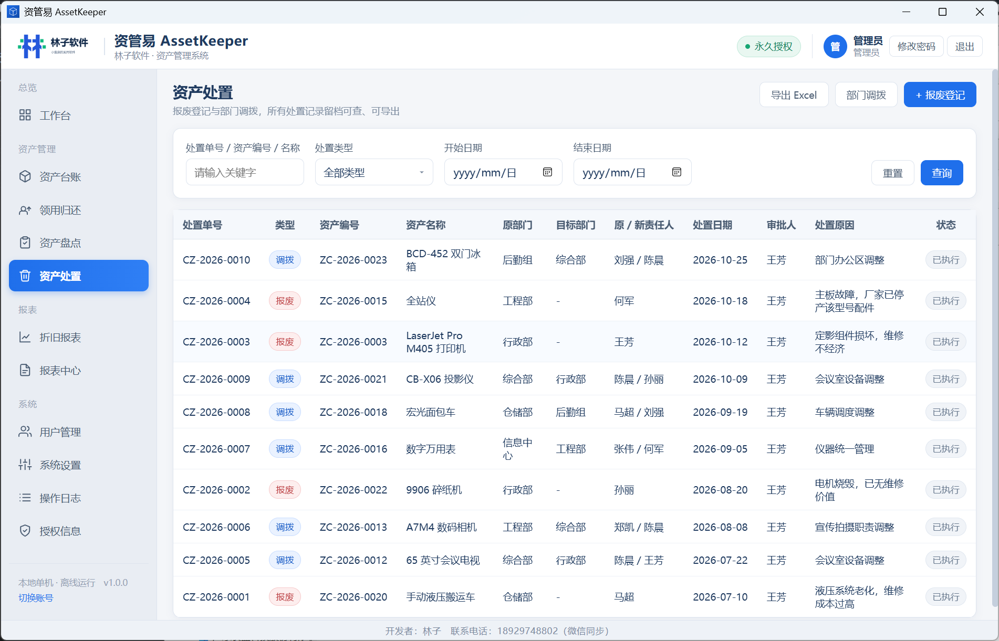
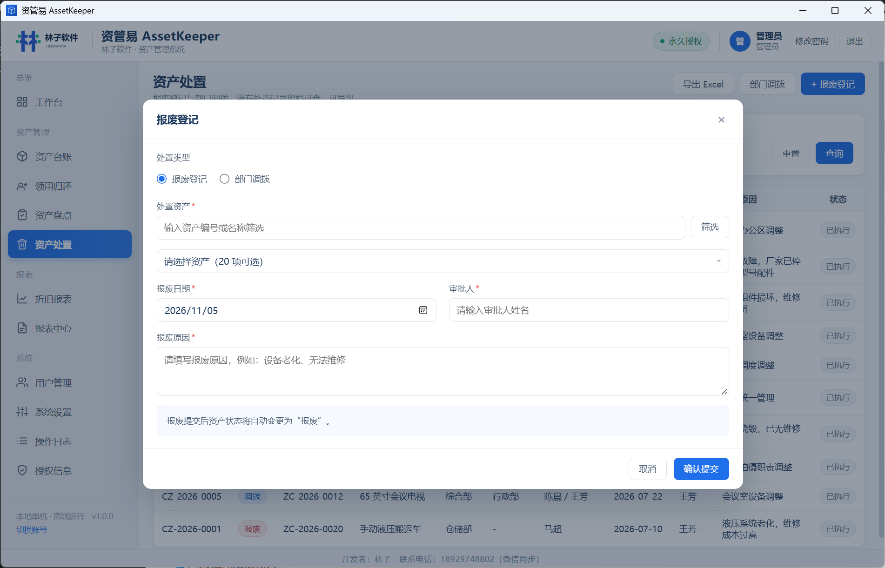
折旧按平均年限法算，按月计提，同一资产同一期间只能提一次。报表里列出编号、名称、年限、原值、月折旧额、已计提月数、残值率、累计折旧和净值，底部还有累计折旧合计与净值合计。净值到残值或年限提满后自动停止，标上"已提足"。
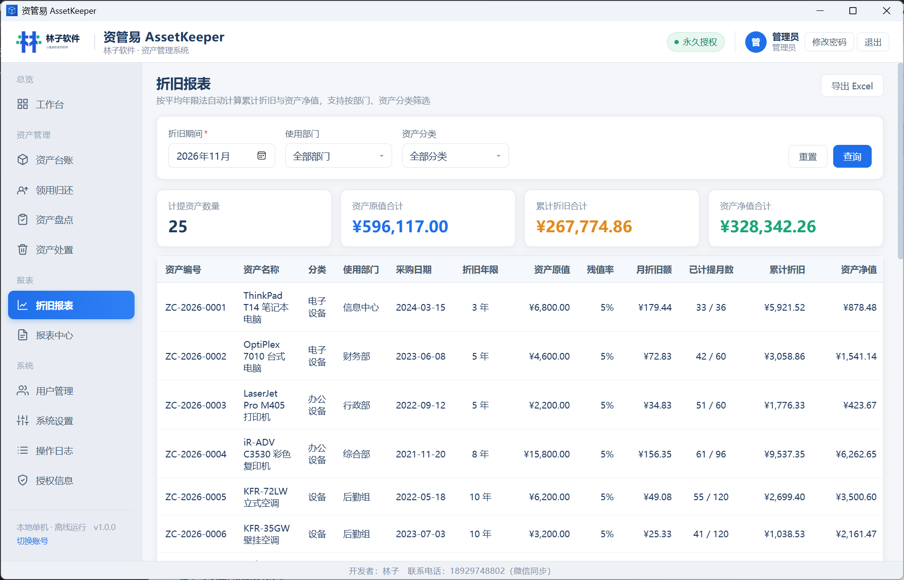
资产汇总表、部门资产统计表、资产增减变动表、盘点报表、领用归还流水、折旧统计表——六类报表都能选统计区间、按分类或部门细分，先预览再导出 Excel。数据全部来自同一个库，不做二次加工，所以报表和台账永远对得上。
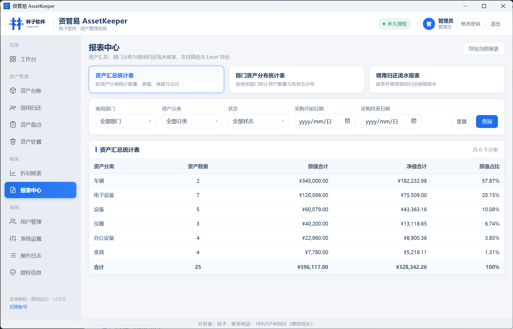
只有两种角色：管理员和操作员。操作员能建档、领用归还、盘点、处置、查报表，但删不了资产、改不了系统设置、不能计提折旧、日志也只能看自己的。系统设置是独立页面（不弹窗），分资产分类、部门设置、标签打印模板、数据备份、其他五个页签。
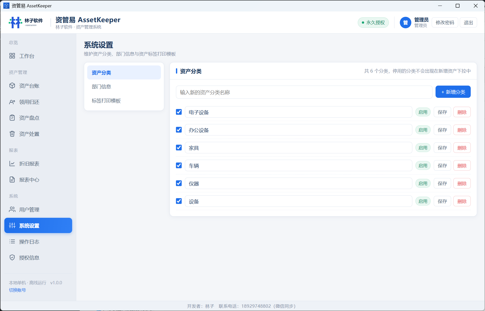
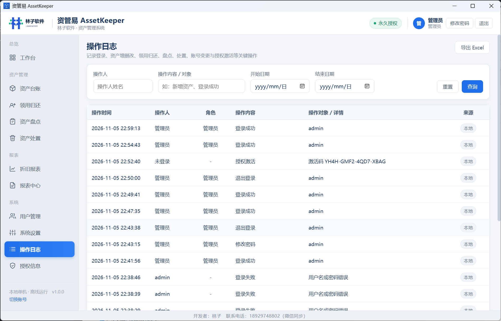
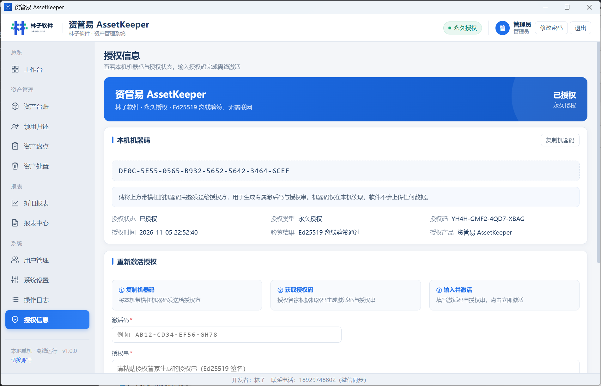
以上截图为软件实际界面，图中数据仅为演示用途。
两个版本共用一个程序，用授权控制功能可见性。差别就一句话：财务要不要从这套系统里直接出折旧数据。
| 功能 | 标准版 | 专业版 |
|---|---|---|
| 资产台账、条码标签、导入导出 | ✓ | ✓ |
| 领用归还、盘点、报废调拨 | ✓ | ✓ |
| 报表中心（汇总、部门统计） | ✓ | ✓ |
| 数据备份与恢复 | ✓ | ✓ |
| 折旧核算与折旧报表 | — | ✓ |
| 效果图存档 | 每项上限 3 张 | 不限 |
| 多账号与部门数据范围 | 单管理员 | 管理员 + 操作员 |
| 操作日志留存 | 最近 1 个月 | 最近 3 个月 |
| 标签打印模板 | 固定模板 | 可自定义 |
只要是"买了一堆设备分给各个部门用"的场景，而且数据不方便放到别人服务器上，就适合。
资产要建台账、要贴码、要年度盘点、要经得起审计，而且数据不能出内网。
行政一个人兼着管资产，靠 Excel 管到几百台就开始乱，需要一个不显重的系统。
设备按科室、按年级分散使用，损坏维修频繁，谁领走、坏没坏都要有记录。
电脑、打印机、仪器、车辆分散在各处，要能按部门统计原值，也要能批量导入台账。
不是功能最多的，但一定是最容易推着别人一起用的那一种。
| 对比项 | 纸质台账 | 自己搭 Excel | 云端资产系统 | 资管易 |
|---|---|---|---|---|
| 台账是否唯一 | 多个副本 | 版本互相覆盖 | 是 | 单一数据库，一处改全局生效 |
| 领用和归还 | 手写登记 | 容易漏记 | 有 | 单据 + 未还拦截 |
| 盘点核对 | 抄表再誊一遍 | 手工比对 | 有 | 自动算盘盈盘亏 |
| 折旧与净值 | 手工算 | 公式易错 | 有 | 平均年限法按月自动 |
| 数据在哪 | 纸本 | 自己电脑 | 厂商服务器 | 自己电脑，不出内网 |
| 费用 | 便宜 | 便宜 | 按年按人订阅 | 一次买断 |
| 断网能用 | 能 | 能 | 不能 | 能，完全离线 |
未激活状态下也能进软件试用，功能都能点，只限了数量：最多录入 10 项资产。拿自己单位真实的三五台设备跑一遍——建档、打一张标签、办一次领用、建一张盘点单，顺不顺手半小时就知道。
下载解压，绿色版双击即用；或用安装包安装
首次启动创建管理员账号，进入授权页复制本机机器码
下单时选择版本（标准版 / 专业版）并提交机器码
回填激活码与授权串，离线验签通过即转为永久授权
验签全程离线，不联网、不上报机器码；试用期录入的资产数据激活后继续沿用，不用重录。
买断制永久授权，按机器授权、一机一码，不绑定账号、不按年收费。标准版与专业版为同一程序，凭授权中的版本字段解锁对应功能。
付款后按机器码发放激活码与授权串 · 授权绑定本机机器码
具体价格与活动以下单页面为准；换机或重装系统需重新申请授权，原授权自动失效。
A：不会。全部数据保存在本机的 SQLite 数据库（assetkeeper.db）里，图片也只存本地路径。软件不联网、不上报任何信息，满足事业单位"数据不出内网"的普遍要求。
A：只限资产数量——最多录入 10 项。建档、条码标签、领用归还、盘点、处置、报表都能正常试用，激活后不限数量，试用期录的数据继续沿用。
A：可以。按系统给的固定模板整理好（字段和台账一致），导入时系统先做格式校验和重复编号校验，有问题的行会列在结果页说明原因，全部通过才写入，不会导一半卡住。
A：走 Windows 打印驱动，常见的条码打印机都能用。支持 50×30mm 和 60×40mm 两种规格；专业版还能自己调标签上的字段组合和字号。
A：平均年限法：年折旧额 =（原值 − 原值 × 残值率）÷ 折旧年限，再除以 12 得月折旧额，按月计提。每台资产都能单独设折旧年限（1–30 年）和残值率，默认 5 年 / 5%。提满或净值到残值后自动停提并标"已提足"。
A：录实际数量，系统自动算盘盈盘亏；差异行必须填差异说明才能提交。盘点单提交后锁定，如需调整要新建一单，改动留痕。
A：能。删除是逻辑删除，30 天内可以从回收站恢复，超期才物理删除。
A：专业版支持多账号。操作员只能建档、领用归还、盘点、处置、看报表，删不了资产、改不了设置、不能计提折旧，日志也只看到自己的；管理员可以给每个操作员指定可见部门范围。
A：系统设置里一键备份，生成带时间戳的 .db 副本，路径可自定义；恢复前会自动再备份一次当前库，避免误覆盖。建议每月盘点前后各备一次。
A：授权按机器授权，换机需要重新取机器码并申请授权，原授权自动失效。具体规则和迁移方式请参考统一售后页面。
A：单机小工具可能被部分杀软误报，可先加入信任列表再运行。遇到无法解决的问题，请通过售后页面联系处理。